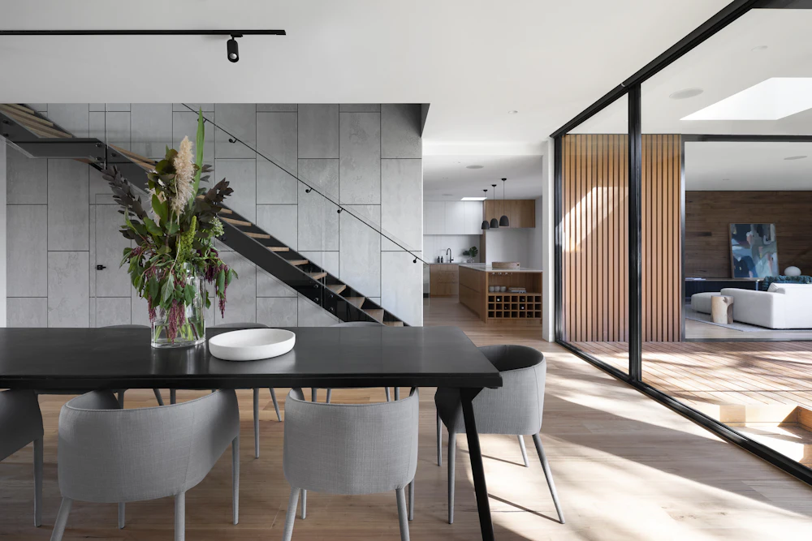

Vanliga frågor och svar om Dolda Fel


Advantage Advokatbyrå – Advantage Advokatbyrå
Att upptäcka dolda fel i en fastighet eller bostad kan få betydande ekonomiska konsekvenser för dig som köpare. På Advantage Advokatbyrå hjälper vi både privatpersoner och företag i tvister som rör dolda fel.
Vårt mål är att tillhandahålla tydlig, engagerad och resultatorienterad juridisk hjälp för att hjälpa dig att navigera i dessa komplexa frågor med tillförsikt.
Vanliga frågor om tvist vid dolda fel
Ett dolt fel är ett fel som fanns i fastigheten eller bostaden redan vid köpet men som inte gick att upptäcka vid en noggrann undersökning/besiktning.
Felet ska inte heller ha varit förväntat med hänsyn till fastighetens ålder, skick och pris. Om dessa kriterier är uppfyllda kan säljaren i vissa fall bli ansvarig enligt jordabalken.
Säljaren ansvarar normalt för dolda fel i upp till tio år efter tillträdet vid fastighetsköp. Det innebär dock inte att köparen kan vänta hur länge som helst med att framställa krav.När ett fel upptäcks måste köparen reklamera felet till säljaren inom skälig tid.
Om du upptäcker ett fel efter ett fastighetsköp bör du:
- Dokumentera felet noggrant
- Kontakta en sakkunnig eller besiktningsman
- Reklamera felet skriftligt till säljaren
- Överväga att kontakta en advokat för juridisk rådgivning
Det är viktigt att agera relativt snabbt för att inte riskera att förlora rätten att kräva ersättning.
Om ett fel bedöms vara ett dolt fel kan köparen i vissa fall ha rätt till:
- prisavdrag, vilket motsvarar fastighetens värdeminskning
- skadeståndför kostnader som uppstått på grund av felet
- hävning av köpeti särskilt allvarliga fall
Vilken ersättning som kan bli aktuell beror på felets omfattning och omständigheterna i det enskilda fallet.
För att få rätt i en tvist om dolda fel måste köparen normalt kunna visa att:
- felet fanns i fastigheten vid köpet
- felet inte gick att upptäcka vid en noggrann undersökning, besiktning
- felet inte var förväntat med hänsyn till fastighetens ålder och skick
Bevisning kan exempelvis bestå av besiktningsprotokoll, tekniska utlåtanden och annan dokumentation.
Nej, många tvister löses genom förhandling mellan köpare och säljare. I vissa fall kan parterna nå en förlikning utan att behöva gå till domstol. Om parterna inte kan enas kan tvisten i stället prövas i domstol.
Det kan vara klokt att kontakta en advokat om:
- du misstänker att ett fel är ett dolt fel
- säljaren bestrider ansvar
- kostnaderna för felet är betydande
- tvisten riskerar att gå till domstol
En advokat kan hjälpa till att analysera situationen och föra klientens talan i förhandling eller domstol.
Ja, men bedömningen påverkas av husets ålder och skick. Äldre hus kan förväntas ha vissa brister, vilket innebär att färre fel klassificeras som dolda fel. Samtidigt kan även äldre fastigheter ha fel som anses vara dolda om de är oväntade och inte gick att upptäcka vid köpet.
Om Advantage Advokatbyrå
Advantage Advokatbyrå har varit verksam i över 18 år och erbjuder kvalificerad juridisk rådgivning till både privatpersoner och företag. Vi arbetar brett inom juridiken och har lång erfarenhet av att bistå våra klienter i både rådgivning och tvister.
Genom vår erfarenhet och kompetens kan vi erbjuda strategisk och praktiskt juridisk rådgivning i komplexa frågor. Vi arbetar alltid med målsättningen att hitta effektiva och hållbara lösningar som tillvaratar klientens intressen på bästa möjliga sätt.
Vi har särskild erfarenhet inom flera centrala rättsområden, bland annat:
- Fastighetsrätt– exempelvis frågor om dolda fel och byggfel.
- Entreprenadrätt– tvister och rådgivning kopplade till bygg- och entreprenadprojekt
- Affärsjuridik– juridiskt stöd till företag i kommersiella frågor och avtal
- Tvistelösning– representation i förhandlingar, skiljeförfaranden och domstolsprocesser.
Advantage Advokatbyrå bistår klienter i hela Sverige och arbetar ofta med ärenden som kräver både juridisk expertis och en strategisk förståelse för klientens situation. Oavsett om det gäller en juridisk rådgivning, en förhandling eller en tvist i domstol är vårt mål att erbjuda tydlig, engagerad och resultatinriktad juridisk hjälp. Utöver vår egen interna expertis har vi ett omfattande nätverk med experter på områden som ligger utanför juridiken.

Kontakta oss för rådgivning i ditt ärende.
Vi bistår klienter i hela Sverige med juridisk rådgivning för att hjälpa till att bedöma om ett fel juridiskt sett kvalificerar som ett dolt fel och vilka rättigheter och ersättningsmöjligheter som finns. Vårt mål är alltid att hjälpa våra klienter att nå en effektiv och juridiskt hållbar lösning.